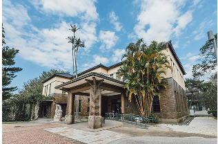

探索風城隱藏角落，集章享好禮！
2025
日
-
日
Srory
風城故事
你是否曾覺得，城市裡總有那麼些地方，你還未曾真正踏足？身邊的日常，是不是少了點能一起探索、一起瘋狂的獨特體驗？
城市漫遊：新竹尋寶挑戰，正是為渴望探索、追求新體驗的你而生！我們相信，最有意義的連結，來自於共同的體驗與發現。這不只是一場尋寶遊戲，更是你與新竹這座城市、以及一段段精彩故事的深度對話。
跟著地圖的線索，穿梭在新竹的古蹟巷弄、文創聚落、海濱風光，解開謎題，完成任務，你會發現這座風城不只科技，更有著豐富的人文底蘊和無限的探索可能。

Gameplay 5 Steps
尋寶5步驟
step
01
活動期間，前往新竹市指定公共設施（如：新竹公園、城隍廟口）或活動服務處，即可免費領取你的專屬尋寶地圖。地圖上藏著通往風城角落的線索！
仔細閱讀地圖上的謎題或提示，它們將引導你前往新竹市各具特色的尋寶點。每個地點都充滿驚喜，等你來發現！
step
02

step
03
抵達指定地點後，根據地圖指示完成趣味任務。可能是與地標的創意合照、錄製一段搞怪短片、回答一個在地小知識，或是與當地店家進行溫暖互動！
將你完成任務的照片或影片，上傳至你的社群平台（Instagram / Facebook），並務必加上指定標籤#新竹尋寶 #城市漫遊，讓你的朋友也看見你的精彩旅程！
step
04
step
05
憑社群打卡證明，在每個尋寶點的指定蓋章處，為你的地圖蓋上獨一無二的印章。集滿所有印章，即可至活動服務處進行抽獎！
Map
尋寶地圖
-
新竹美術館
每檔期展覽配合主題規劃，展出的形式也結合數位互動內容與教育推廣的形式。
-
東門城護城河

新竹的歷史地標，如今已是融合現代設計的親水公園。
-
新竹孔廟
是清代淡水廳的儒學學宮，為地方的官學校，同時也是祭祀用的文廟。
-

玻璃工藝館
彰顯新竹的玻璃產業史並推廣玻璃工業。
-
新竹火車站
是全台唯一沒有招牌的火車站，建築樣式融合了西方建築特色。
-
十八尖山
是一塊長約七、八公里、呈新月形，由十八座高約百公尺的山頭所構成的丘陵地帶。
Rewards
豐富獎賞
人人有獎！集章抽好禮
只要你集滿地圖上的所有印章，即可憑地圖前往指定兌獎處，參與我們的「人人有獎」抽獎活動！無論大小，每位完成挑戰的城市漫遊家，都將獲得一份驚喜好禮，感謝你的熱情參與！
專屬優惠！憑圖享折扣
你的尋寶地圖不僅是成就的證明，更是你的專屬優惠通行證！憑蓋滿印章的尋寶地圖，即可在新竹市多家精選合作餐飲、文創、伴手禮店家，享有獨家折價優惠。讓你的城市漫遊，吃喝玩樂都划算！
Service Counter
服務櫃台
新竹市中正路120號